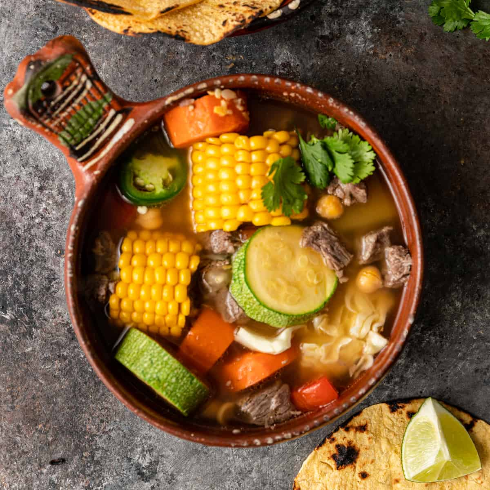

Caldo de Res

Description
This is an extremely hearty and satisfying soup. The hind shank flavors the broth beautifully as does the marrow in the bones. Garnish with slivered raw onion, lime juice, jalapenos, and more cilantro.
Ingredients
- 2 pounds beef shank, with bone
- 1 tablespoon vegetable oil
- 2 teaspoons salt
- 2 teaspoons ground black pepper
- 1 onion, chopped
- 1 (14.5 ounce) can diced tomatoes
- 3 cups beef broth
- 4 cups water
- 2 medium carrot, coarsely chopped
- ¼ cup chopped fresh cilantro
- 1 potato, quartered (Optional)
- 2 ears corn, husked and cut into thirds
- 2 chayotes, quartered (Optional)
- 1 medium head cabbage, cored and cut into wedges
- ¼ cup sliced pickled jalapenos
- ¼ cup finely chopped onion
- 1 cup chopped fresh cilantro
- 2 limes, cut into wedges
- 4 radishes, quartered
Steps
- Cut the meat from the beef bones into about 1/2 inch pieces, leaving some on the bones.
- Heat a heavy soup pot over medium-high heat until very hot. Add the oil, tilting the pan to coat the bottom. Add the meat and bones, and season with salt and pepper. Cook and stir until thoroughly browned.
- Add 1 onion, and cook until onion is also lightly browned. Stir in the tomatoes and broth. The liquid should cover the bones by 1/2 inch. If not, add enough water to compensate. Reduce heat to low, and simmer for 1 hour with the lid on loosely. If meat is not tender, continue cooking for another 10 minutes or so.
- Pour in the water, and return to a simmer. Add the carrot and 1/4 cup cilantro, and cook for 10 minutes, then stir in the potato, corn and chayote. Simmer until vegetables are tender. Push the cabbage wedges into the soup, and cook for about 10 more minutes.
- Ladle soup into large bowls, including meat vegetables and bones. Garnish with jalapenos, minced onion, and additional cilantro. Squeeze lime juice over all, and serve with radishes.